| 日付 | 2024年8月3日（土） |
|---|---|
| 山域 | 八ヶ岳 |
| メンバー | 家族（妻） |
| 山行形態 | 日帰り |
| アクセス | 車 |
| ルート (Map) | 霧ヶ峰自然保護センター (8:47) - (9:43) 車山肩 - (10:21) 車山 (10:40) - (11:34) 南の耳 - (11:47) 北の耳 (12:17) - (12:38) 男女倉山 - (13:27) 沢渡 - (14:12) 霧ヶ峰自然保護センター |
久々の登山。毎日毎日、信じられないほど暑いので、涼しい山を求める。
行先は霧ヶ峰。そこそこ標高があり、あまり登らなくてもよいので、
快適な登山が期待できそうだ。
ぐるっと一周のマイナールートを歩くことにする。
霧ヶ峰自然保護センターの駐車場に車を停める。標高1675m。
朝早く出たので駐車場はまだ空いている。
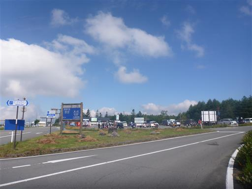
駐車場のすぐそばから登山道が始まる。
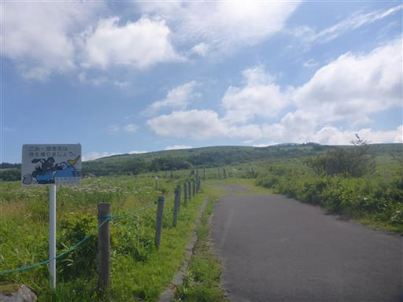
この辺りは様々な花が咲いていて、第1園地～第5園地まであるようだ。
距離が近く、特に区画もある訳ではないので、1～5の数字を割り当てる必要はないように思うが…
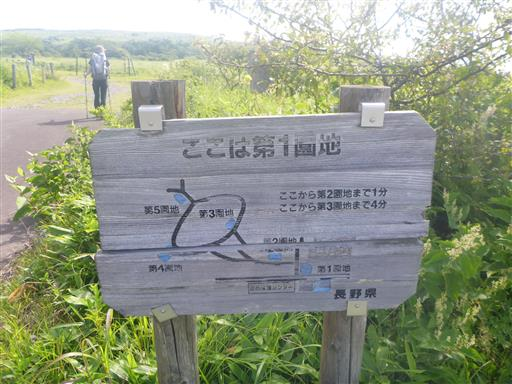
オニユリとアゲハ蝶。
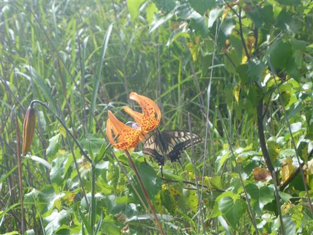
植物の名前が記載されているので、覚えるのに好都合。
ただ、様々な花が咲いているので、どの花を指しているかは分かりにくい。
認識するのに、ある程度の花の知識は必要だ。
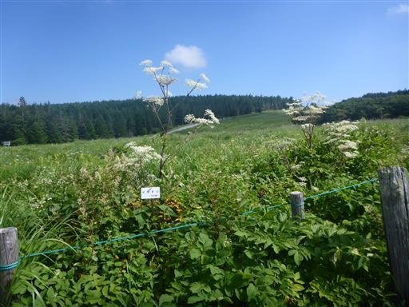
オオダイコンソウの実。たまに山で見かけるが、初めて名前を認識できた。
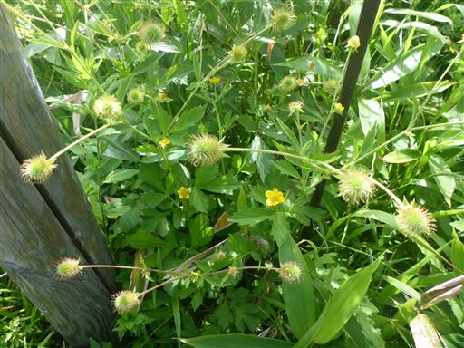
ヤナギラン。よく目立つ花だ。

コウリンカ。濃い橙色の花で、こちらもよく目立つ。
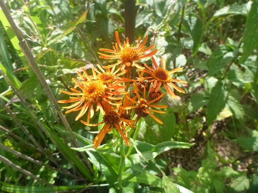
ナデシコ。あちらこちらで見られる。
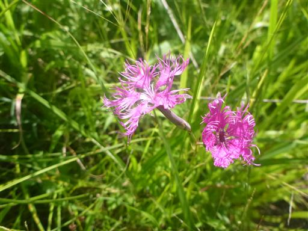
草原地帯から樹林帯の中に入っていく。
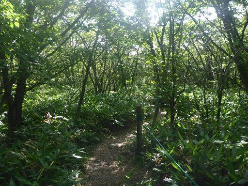
樹林帯を抜けると再び草原地帯。
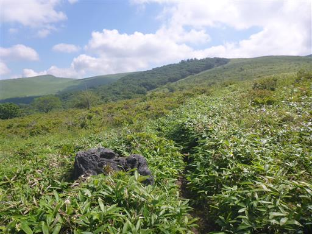
岩の上に鳥がとまっている。
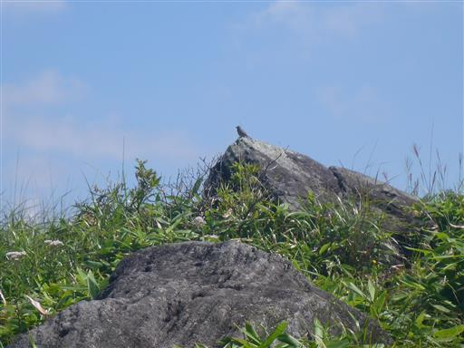
アサギマダラがひらひらと飛んでいる。
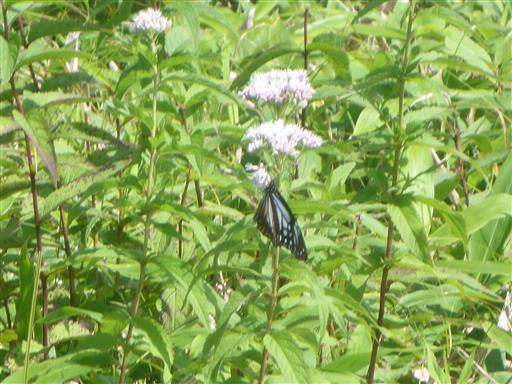
雲が多いが、アルプスの山々の景色が見える。こちらは南アルプス。
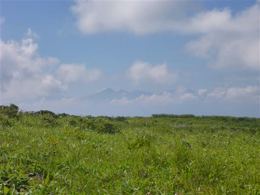
中央アルプス。
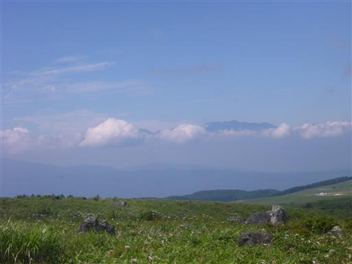
北アルプス。霞んでいてほとんど見えないが、穂高岳の辺りが見えている。
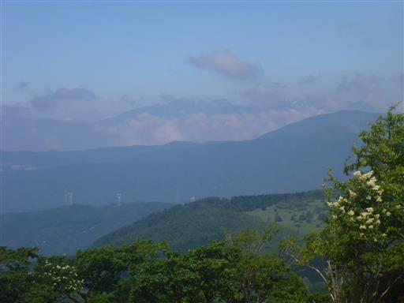
車山山頂のレーダー観測所が見えてきた。
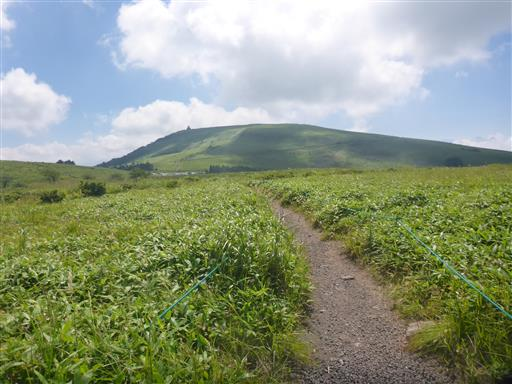
植物は電気柵によって食害から守られている。
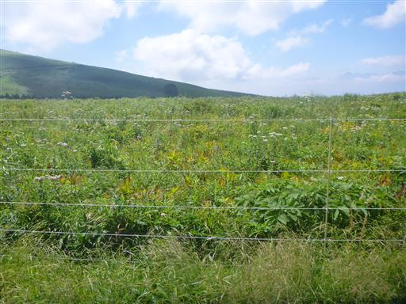
電気柵の無い方とだいぶ景色が異なる。
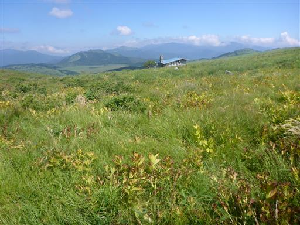
車山肩に到着。ここにも駐車場がある。
本日はトレーニングのためここまで歩いた。
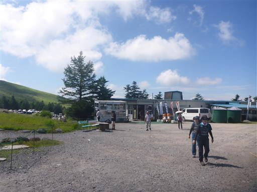
コロボックルヒュッテには長蛇の列ができている。何時間待つのだろう？
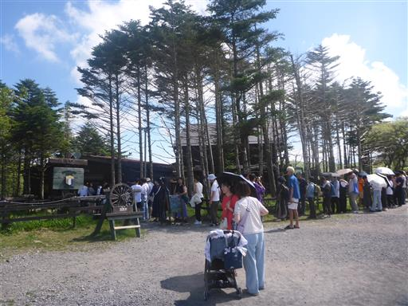
車山に向けて歩き出す。登山道は思ったほど混雑していない。
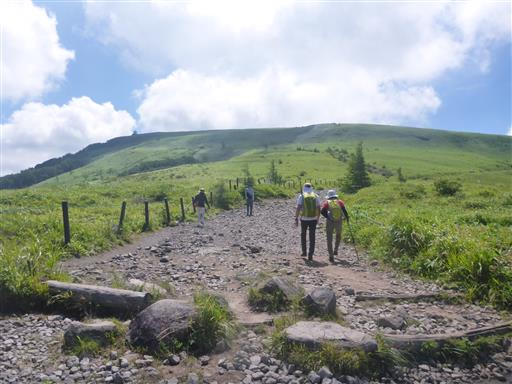
ぐるっと大きく回るため、非効率な道だ。なかなか高度が上がらない。
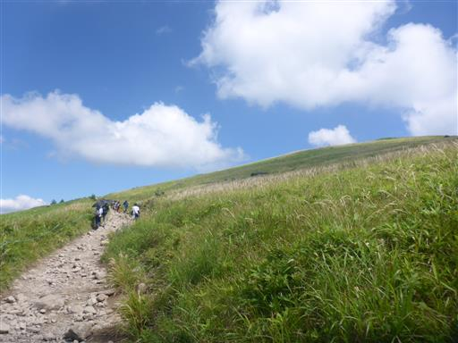
霧ヶ峰の草原を見渡す。
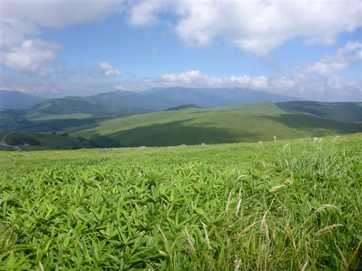
山頂が見えてきた。
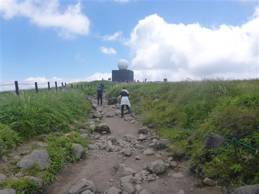
霧ヶ峰の最高地点、車山山頂に到着。標高1925m。
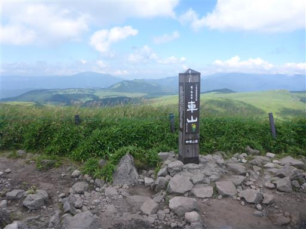
山頂の巨大な気象レーダー観測所。
ここに来るのは、車山高原スキー場に来た時以来4年振り、歩いてくるのは13年振りだ。
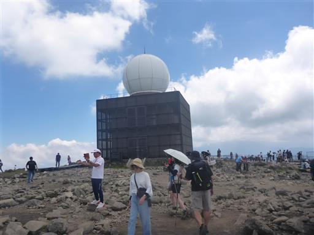
巨大な展望台がある。初めて見かけたが、いつ作られたのだろう？
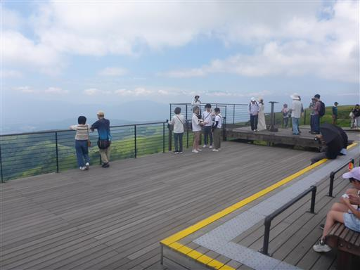
残念ながら遠くの景色は全て靄の中だ。
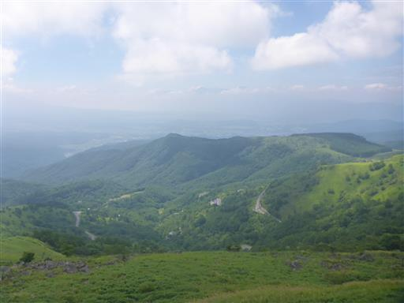
車山神社。四本の柱が立っている。
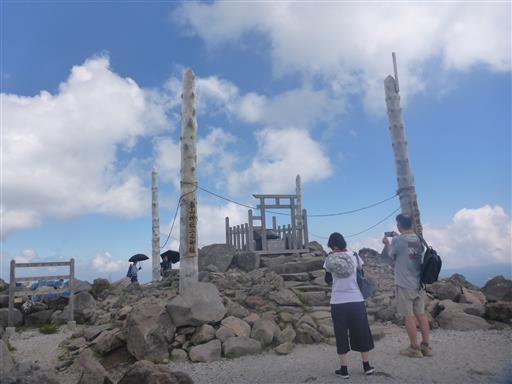
山頂直下にはリフト駅がある。多くの観光客はこちらから来るようだ。

白樺湖を見下ろす。その背後の八ヶ岳は残念ながら雲の中だ。
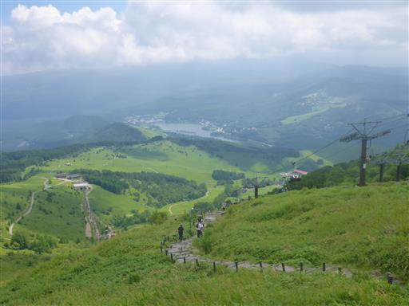
車山山頂からの下山道は、結構な急斜面。
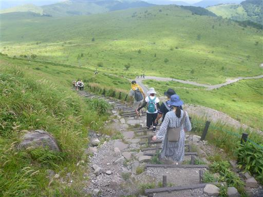
この棒はいったい何だろう？
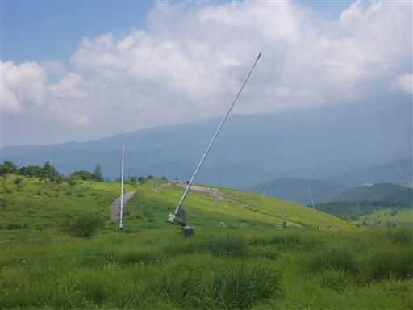
分岐点。蝶々深山に向かう道と分かれて南の耳に向かう。
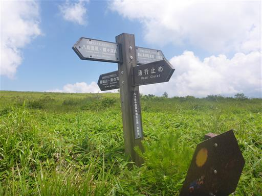
ここからはマイナールートだ。
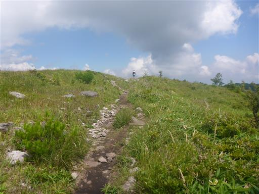
木が右側に傾いている。風が強い場所なのだろうか？
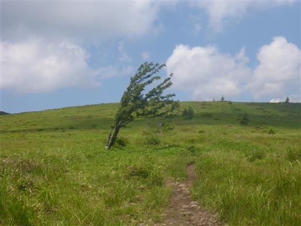
エコーバレースキー場。コロナ以降、営業を休止している。
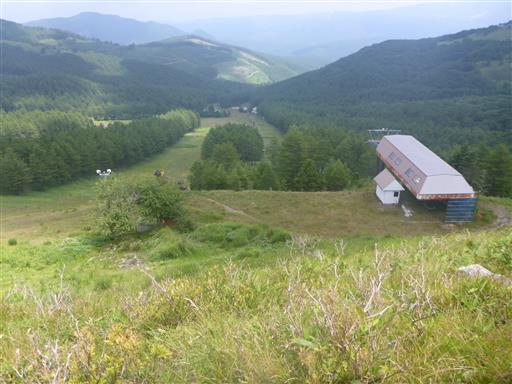
南の耳に到着。標高1838m。
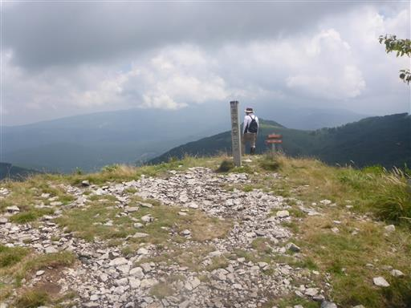
歩いてきた草原を見渡す。真ん中に見える車山からここまで歩いてきた。
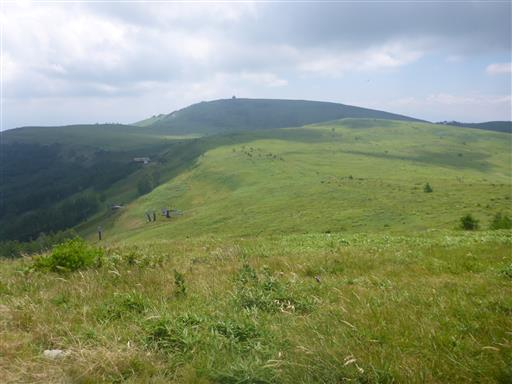
すぐ隣の北の耳。
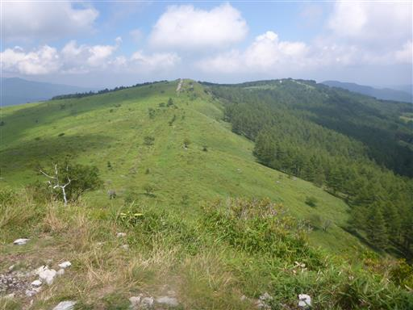
斜面の先に八島湿原が見える。
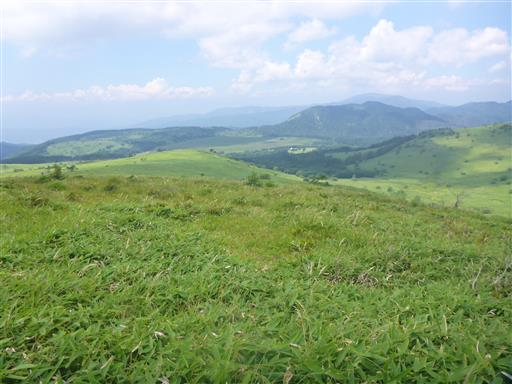
北の耳への登り。斜面は急だが、長くは続かない。
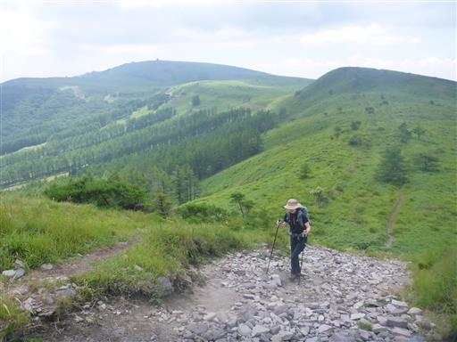
北の耳に到着。標高1829m。
ここで昼食休憩をとることにする。
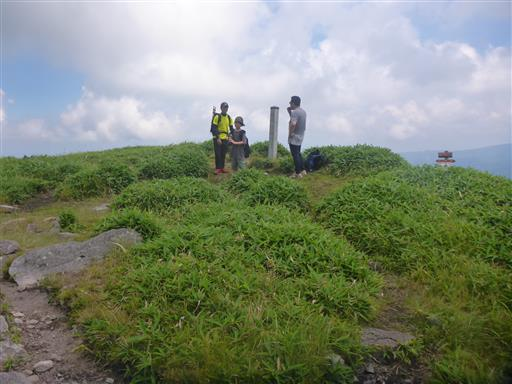
昼食をとったら出発。山頂直下の分岐点。男女倉山に向かう。
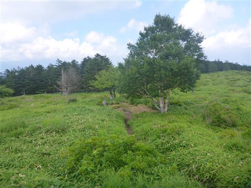
アップダウンのほとんどない緩やかな斜面。
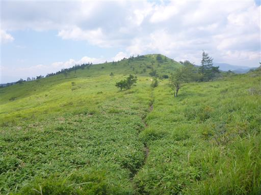
振り返って南の耳と北の耳を望む。
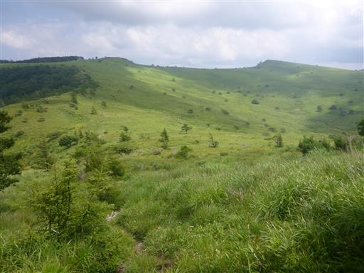
あちらこちらにイブキジャコウソウが咲いている。
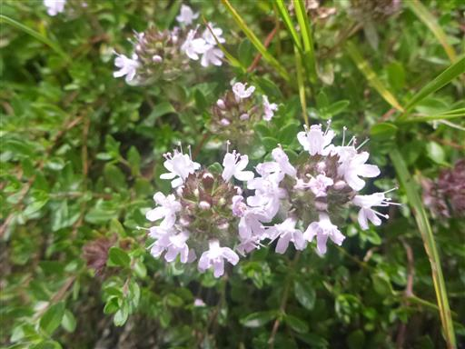
男女倉山に到着。標高1776m。別名ゼブラ山。
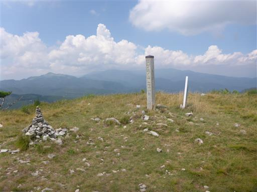
八島湿原に近づくと、植生保護のためのフェンスが現れる。
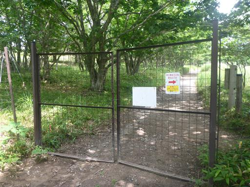
霧ヶ峰のあちらこちらにハクサンフウロが咲いていたが、これは少し異なる。
アサマフウロだろうか？
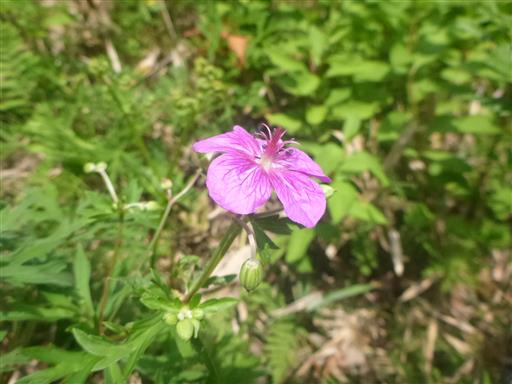
シモツケソウ。華やかな花だ。
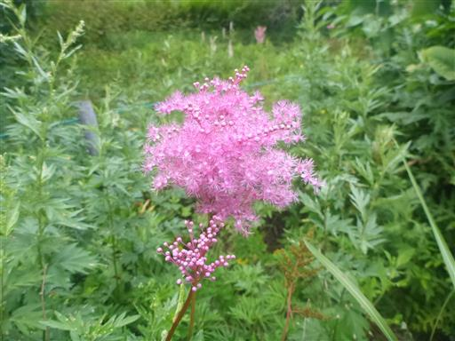
しばらくは車道のようなつまらない道が続く。
沢渡からようやく登山道が始まる。
樹林帯の中に入ると、これまでと風景がガラッと変わる。
人間の手が入らなければ霧ヶ峰一帯はこのような森林だったのかもしれない。
最後は登りの道と合流し、第1～5園地を歩いていく。
無事下山。駐車場は大賑わいだ。
今回、初めて霧ヶ峰をぐるっと回って歩いてみた。
一周しても5時間弱の小さな山ではあるが、のびやかな草原と花々が目を楽しませてくれた。